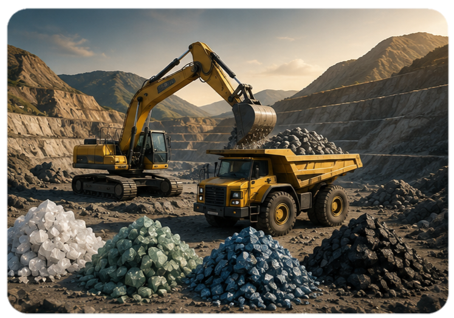
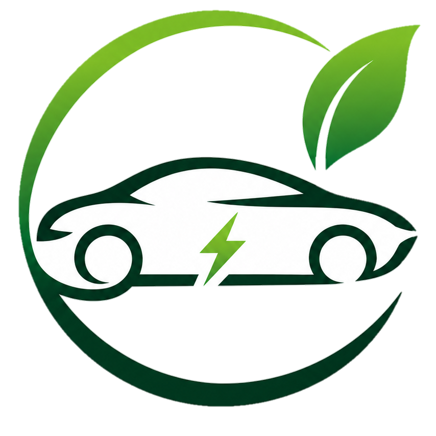
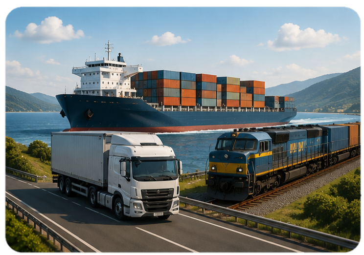
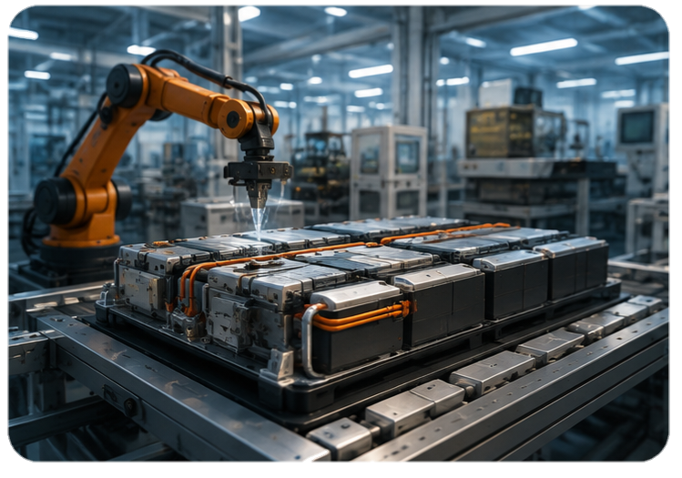
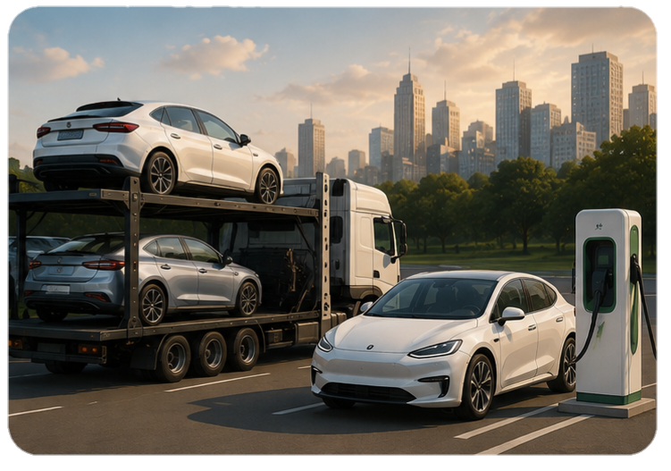
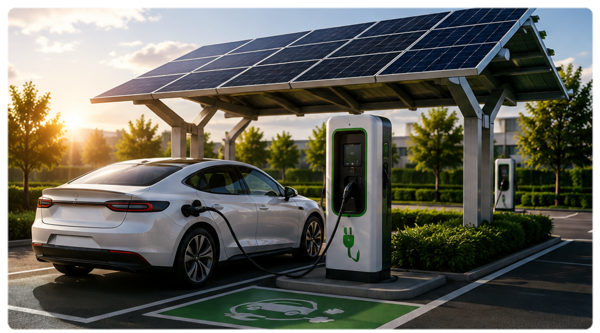
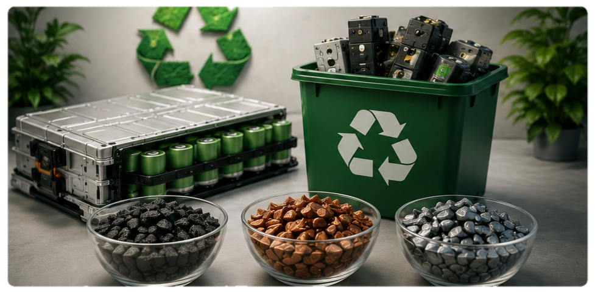
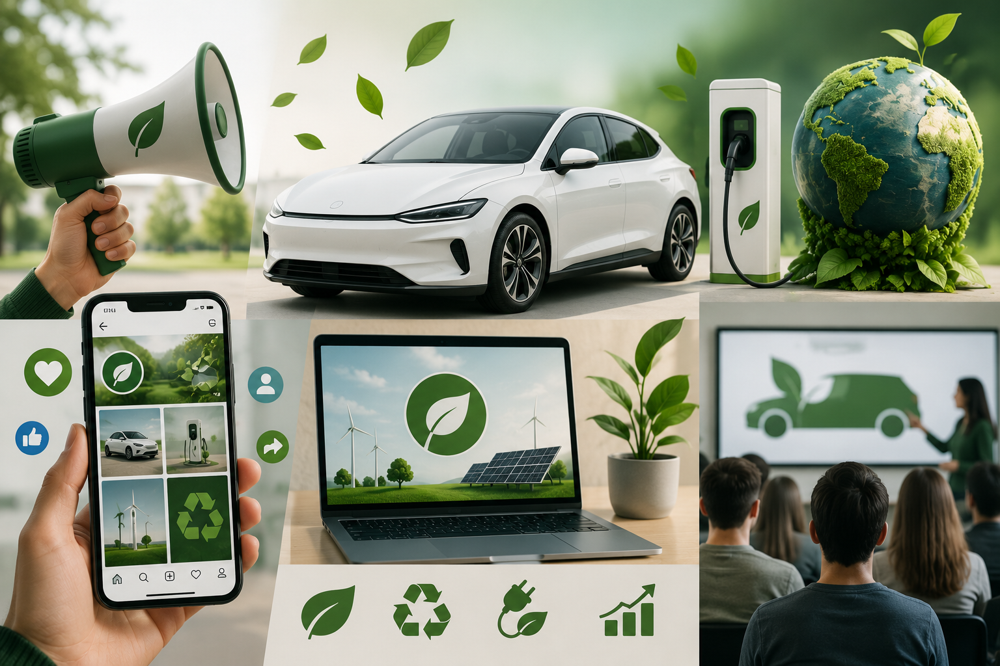

1. Extração
Minerais como lítio, níquel e cobalto são extraídos em diferentes regiões do mundo.

A produção de carros elétricos depende de uma cadeia logística global. Matérias-primas, baterias e componentes percorrem grandes distâncias até chegarem às fábricas, o que também gera emissões de carbono.

Minerais como lítio, níquel e cobalto são extraídos em diferentes regiões do mundo.

Os materiais são transportados por caminhões, navios e trens até locais de processamento e fabricação.

Baterias e componentes são produzidos em fábricas que também utilizam energia e geram emissões.

Depois da montagem, os veículos são transportados para diferentes países e regiões até chegarem aos consumidores.
Quanto maiores as distâncias percorridas e maior o uso de combustíveis fósseis no transporte e na produção, maior pode ser a emissão de carbono associada ao veículo antes mesmo de ele começar a circular.
O ciclo de vida do carro elétrico representa todas as etapas pelas quais o veículo passa, desde sua fabricação até o fim de sua vida útil. Essas etapas são importantes para entender o funcionamento e os impactos do veículo durante todo o seu percurso.
A primeira etapa é a fabricação do carro. Seus componentes, como bateria, motor elétrico, carroceria e sistemas eletrônicos, são produzidos e depois montados para formar o veículo. A bateria é um dos principais componentes do carro elétrico e possui grande importância durante todo o ciclo de vida.
Depois de fabricado, o carro é transportado para os locais onde será vendido. Nessa etapa, o veículo passa por centros de distribuição e concessionárias até chegar ao consumidor. A partir da compra, começa sua utilização pelo proprietário.
Durante essa etapa, o carro é utilizado para transportar pessoas ou mercadorias. A bateria fornece energia para o motor elétrico, permitindo que o veículo se movimente. O tempo de utilização é importante, pois quanto mais tempo o carro permanece funcionando, maior é o aproveitamento dos recursos utilizados em sua fabricação.
Durante sua utilização, o carro precisa passar por manutenções para continuar funcionando corretamente. É necessário verificar itens como pneus, freios, suspensão, sistemas eletrônicos e bateria. A manutenção adequada ajuda a aumentar a vida útil do veículo e evita substituições desnecessárias.
Depois de vários anos, o carro pode chegar ao fim de sua vida útil. Porém, isso não significa que ele precise ser imediatamente descartado. O veículo pode ser vendido para outro proprietário, reparado ou ter determinados componentes substituídos, prolongando seu período de utilização.
Quando o carro ou seus componentes não podem mais ser utilizados, começa a etapa de reaproveitamento. Algumas baterias podem receber uma segunda utilização, por exemplo, em sistemas de armazenamento de energia. Quando não podem mais ser reutilizados, seus materiais podem ser encaminhados para reciclagem, permitindo recuperar recursos e utilizá-los novamente na produção.
do Carro Elétrico
O ciclo de vida do carro elétrico vai muito além do momento em que ele é dirigido. Ele começa na fabricação, passa pela comercialização, utilização e manutenção e termina com a reutilização ou reciclagem de seus componentes. Dessa forma, analisar todas essas etapas é fundamental para compreender os impactos e a sustentabilidade dos carros elétricos.
Os carros elétricos são veículos que utilizam energia elétrica para funcionar, em vez de depender principalmente de combustíveis como gasolina e diesel. Eles vêm ganhando espaço como uma alternativa para diminuir os impactos ambientais causados pelo transporte. Segundo a Agência Internacional de Energia (IEA), os carros elétricos não soltam gases pelo escapamento durante o uso e podem ajudar a diminuir a emissão de gases de efeito estufa. Mesmo sendo uma opção mais sustentável, os carros elétricos também têm alguns desafios. Um deles é a produção e o descarte das baterias, que possuem materiais como lítio e níquel. Por isso, é importante pensar no que fazer com essas baterias quando elas não puderem mais ser usadas.

A proposta é criar estações para carregar carros elétricos usando energia solar. Essas estações poderiam ser instaladas em estacionamentos, escolas, supermercados, postos de gasolina e outros locais públicos.

Outra parte da proposta é recolher as baterias usadas e encaminhá-las para reutilização ou reciclagem, permitindo recuperar materiais importantes como lítio e níquel.
Essas ações ajudariam a diminuir a poluição, reduzir o descarte incorreto das baterias, reaproveitar materiais importantes e tornar o transporte mais sustentável.
Com o crescimento dos carros elétricos, aumenta também a necessidade de uma infraestrutura de recarga acessível. Pensando nesse desafio, a EcoMove propõe uma rede de estações de carregamento conectadas a uma plataforma digital, unindo tecnologia, mobilidade e sustentabilidade.
Instalação de pontos de recarga para veículos elétricos em locais estratégicos, facilitando o acesso dos usuários ao carregamento.
Parcerias com supermercados, shopping centers, estacionamentos, condomínios e empresas para ampliar a rede de carregadores
Utilização de fontes renováveis, como energia solar, quando houver viabilidade, reduzindo os impactos associados à recarga.
A receita viria principalmente da cobrança pelo serviço de recarga, além de contratos e parcerias com empresas e estabelecimentos.
Por meio do aplicativo EcoMove, o usuário poderia localizar os carregadores mais próximos, verificar a disponibilidade, consultar informações sobre o serviço e realizar o pagamento.
A EcoMove utiliza o Marketing Verde para divulgar soluções de mobilidade elétrica e seus serviços de recarga de forma responsável, destacando seus benefícios ambientais sem esconder os impactos relacionados à produção das baterias, extração de matérias-primas e geração de eletricidade.

Pessoas interessadas em tecnologia e sustentabilidade, consumidores que procuram alternativas aos veículos tradicionais e empresas que desejam tornar suas frotas mais eficientes
A EcoMove apresenta o carro elétrico como uma alternativa para uma mobilidade mais tecnológica, eficiente e responsável.
"Mude o caminho e escolha a mobilidade do futuro."
A campanha será divulgada por redes sociais, vídeos educativos, site da EcoMove, concessionárias, feiras de tecnologia e instituições de ensino.
A EcoMove busca evitar propagandas ambientais exageradas ou enganosas. Em vez de afirmar que seus carros são "100% sustentáveis", apresenta informações específicas e verificáveis, como a ausência de emissões pelo escapamento durante o uso dos veículos totalmente elétricos.
O Marketing Verde da EcoMove busca unir divulgação, informação e conscientização. A campanha Mude o Caminho incentiva o uso de novas tecnologias para uma mobilidade mais eficiente, reconhecendo tanto os benefícios quanto os desafios ambientais dos carros elétricos.